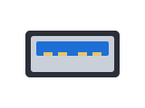
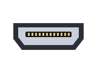
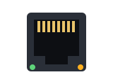
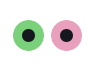
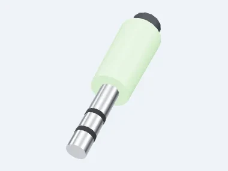
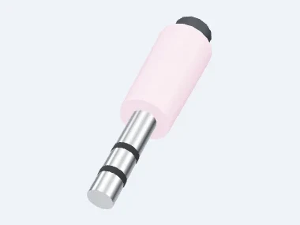

<!DOCTYPE html>
<html lang="fr">
<head>
<meta charset="utf-8">
<meta name="viewport" content="width=device-width, initial-scale=1, viewport-fit=cover">
<meta name="theme-color" content="#0b0e14">
<meta name="robots" content="noindex, nofollow">
<title>Autour du PC</title>
<!-- Travail « pc-peripheriques » — Technologie 5e (et 3e).
     Prolonge la séquence 1 « Bases de l'informatique », séances 2 à 4 : périphériques
     d'entrée et de sortie, fiches et connecteurs, chaîne d'information, ouvrir et
     remonter la tour en sécurité (leçons 2A, 3A, 4A).
     Les images des périphériques sont des photos des modèles 3D du jeu « Le PC »
     (studio de vignettes, src/three/Thumbnails.tsx) : l'élève retrouve les objets qu'il
     a branchés au chapitre 8. Les prises USB, HDMI et RJ45 sont dessinées ici (img/prise-*.svg). -->
<link rel="stylesheet" href="../commun/maison.css">
<link rel="stylesheet" href="../commun/jeux.css">
</head>
<body>
<main class="ecran" id="ecran"></main>

<script src="../config.js"></script>
<script src="../commun/maison.js"></script>
<script src="../commun/jeux.js"></script>
<script>
'use strict';

var ENTREE = '#4dd0e1', SORTIE = '#66d17a', LES_DEUX = '#a78bfa';   /* les couleurs du jeu Le PC */

/* La chaîne d'information, dessinée comme sur la diapositive de la séance 4, mais en
   colonne pour l'écran d'un téléphone. */
function chaine(avecConstituants){
  var f = [['ACQUÉRIR', 'faire entrer', 'le clavier, la souris'], ['TRAITER', 'calculer, décider', 'le processeur'],
           ['STOCKER', 'garder', 'la mémoire, le disque dur'], ['COMMUNIQUER', 'faire sortir', 'l’écran, l’enceinte']];
  var s = '<svg xmlns="http://www.w3.org/2000/svg" viewBox="0 0 320 ' + (avecConstituants ? 360 : 330) + '" font-family="Nunito, sans-serif">';
  f.forEach(function(x, i){
    var y = 10 + i * 86;
    s += '<rect x="20" y="' + y + '" width="' + (avecConstituants ? 150 : 280) + '" height="62" rx="12" fill="#fbf1ec" stroke="#a5402d" stroke-width="3"/>' +
      '<text x="' + (avecConstituants ? 95 : 160) + '" y="' + (y + 28) + '" text-anchor="middle" font-size="19" font-weight="800" fill="#a5402d">' + x[0] + '</text>' +
      '<text x="' + (avecConstituants ? 95 : 160) + '" y="' + (y + 50) + '" text-anchor="middle" font-size="14" font-style="italic" fill="#6b4a3a">' + x[1] + '</text>';
    if(avecConstituants) s += '<text x="182" y="' + (y + 36) + '" font-size="14" font-weight="700" fill="#2a2a2a">' + x[2] + '</text>';
    if(i < 3) s += '<path d="M' + (avecConstituants ? 95 : 160) + ' ' + (y + 64) + 'v14" stroke="#6b4a3a" stroke-width="4"/><path d="M' + (avecConstituants ? 87 : 152) + ' ' + (y + 74) + 'l8 10 8-10z" fill="#6b4a3a"/>';
  });
  return s + '</svg>';
}

Jeux.lancer({
  devoir: 'pc-peripheriques',
  titre: 'Autour du PC',
  ic: '🔌',
  duree: '15 min',
  missions: [

    /* ---------------------------------------------------------------- 1 */
    { nom: 'Entrée ou sortie ?', ic: '🔁', accroche: 'Qui envoie ? Qui reçoit ?',
      lecon: [
        { titre: 'Entrée', visuel: { img: 'img/keyboard.webp', alt: 'Un clavier', clair: true },
          texte: 'Un périphérique d’**entrée** ENVOIE des informations à l’ordinateur.\nLe clavier, la souris, le micro.' },
        { titre: 'Sortie', visuel: { img: 'img/monitor.webp', alt: 'Un écran', clair: true },
          texte: 'Un périphérique de **sortie** REÇOIT les informations de l’ordinateur.\nIl te les montre ou te les fait entendre : l’écran, l’enceinte.' },
        { titre: 'Les deux', visuel: { img: 'img/usbkey.webp', alt: 'Une clé USB', clair: true },
          texte: 'Certains font **les deux** : ils envoient ET reçoivent.\nLa clé USB, la box internet.' }
      ],
      jeux: [
        { type: 'tri', consigne: 'Touche la bonne case.',
          bacs: [{ nom: 'Entrée', ic: '📥', couleur: ENTREE }, { nom: 'Sortie', ic: '📤', couleur: SORTIE }, { nom: 'Les deux', ic: '🔁', couleur: LES_DEUX }],
          cartes: [
            { txt: 'Le clavier', img: 'img/keyboard.webp', bac: 0, pourquoi: 'Le clavier ENVOIE les touches que tu tapes.' },
            { txt: 'La souris', img: 'img/mouse.webp', bac: 0, pourquoi: 'La souris ENVOIE les mouvements de ta main et tes clics.' },
            { txt: 'Le micro', img: 'img/micro.webp', bac: 0, pourquoi: 'Le micro ENVOIE ta voix à l’ordinateur.' },
            { txt: 'La manette', img: 'img/gamepad.webp', bac: 0, pourquoi: 'La manette ENVOIE tes appuis sur les boutons.' },
            { txt: 'L’écran', img: 'img/monitor.webp', bac: 1, pourquoi: 'L’écran REÇOIT les images de l’ordinateur pour te les montrer.' },
            { txt: 'L’enceinte', img: 'img/speaker.webp', bac: 1, pourquoi: 'L’enceinte REÇOIT le son de l’ordinateur pour te le faire entendre.' },
            { txt: 'L’imprimante', ic: '🖨️', bac: 1, pourquoi: 'L’imprimante REÇOIT ton document pour l’imprimer.' },
            { txt: 'La clé USB', img: 'img/usbkey.webp', bac: 2, pourquoi: 'On lit ET on écrit des fichiers sur une clé USB : elle fait les deux.' },
            { txt: 'La box internet', img: 'img/box.webp', bac: 2, pourquoi: 'Les données d’Internet partent ET arrivent par la box.' }
          ] },
        { type: 'qcm', q: 'Tu tapes sur le clavier. Dans quel sens va l’information ?',
          visuel: { img: 'img/keyboard.webp', alt: 'Un clavier', clair: true }, fixe: true,
          choix: [{ ic: '⌨️➡️🖥️', txt: 'Du clavier vers l’ordinateur' }, { ic: '🖥️➡️⌨️', txt: 'De l’ordinateur vers le clavier' }], bon: 0,
          explication: 'Le clavier ENVOIE les touches : c’est un périphérique d’entrée.' }
      ] },

    /* ---------------------------------------------------------------- 2 */
    { nom: 'La bonne prise', ic: '🔌', accroche: 'USB, HDMI, RJ45, jack.',
      lecon: [
        { titre: 'Une fiche, un connecteur', visuel: { html: '<div class="prises">' +
            '<span>USB</span><span>HDMI</span>' +
            '<span>RJ45</span><span>jack</span></div>' },
          texte: 'Chaque câble a sa **fiche**. On la branche dans le **connecteur** de la même forme.\nUSB pour la plupart des périphériques, **HDMI** pour l’écran, **RJ45** pour le réseau.' },
        { titre: 'Le son : vert ou rose', visuel: { html: '<div class="prises deux">' +
            '<span>vert</span><span>rose</span></div>' },
          texte: 'Le jack **vert** fait SORTIR le son : l’enceinte, le casque.\nLe jack **rose** fait ENTRER le son : le micro.' },
        { titre: 'Et le câble d’alimentation ?', visuel: { img: 'img/power.webp', alt: 'Le câble d’alimentation', clair: true },
          texte: 'Il n’apporte **pas d’information**.\nIl apporte l’**énergie électrique** de la prise jusqu’au bloc d’alimentation.' }
      ],
      jeux: [
        { type: 'qcm', q: 'Laquelle est la prise **HDMI**, pour l’écran ?', grille: true,
          choix: [{ img: 'img/prise-hdmi.svg', txt: 'A' }, { img: 'img/prise-usb.svg', txt: 'B' }, { img: 'img/prise-rj45.svg', txt: 'C' }, { img: 'img/prise-jack.svg', txt: 'D' }],
          bon: 0, explication: 'La prise HDMI est plate et large, avec deux coins coupés en biais.' },
        { type: 'paires', consigne: 'Relie chaque appareil à sa prise.', titres: ['Appareil', 'Prise'],
          paires: [
            [{ img: 'img/monitor.webp', txt: 'L’écran' }, { img: 'img/prise-hdmi.svg', txt: 'HDMI' }],
            [{ img: 'img/keyboard.webp', txt: 'Le clavier' }, { img: 'img/prise-usb.svg', txt: 'USB' }],
            [{ img: 'img/box.webp', txt: 'La box' }, { img: 'img/prise-rj45.svg', txt: 'RJ45' }],
            [{ img: 'img/speaker.webp', txt: 'L’enceinte' }, { img: 'img/fiche-jack-vert.webp', txt: 'Jack vert' }],
            [{ img: 'img/micro.webp', txt: 'Le micro' }, { img: 'img/fiche-jack-rose.webp', txt: 'Jack rose' }]
          ] },
        { type: 'vf', q: 'Le câble d’alimentation apporte des **informations** à l’ordinateur.',
          visuel: { img: 'img/power.webp', alt: 'Le câble d’alimentation', clair: true }, vrai: false,
          explication: 'Il apporte l’ÉNERGIE électrique, pas d’information.' }
      ] },

    /* ---------------------------------------------------------------- 3 */
    { nom: 'La chaîne d’information', ic: '⛓️', accroche: 'Acquérir, traiter, stocker, communiquer.',
      lecon: [
        { titre: 'Le chemin de l’information', visuel: { svg: chaine(false), alt: 'Acquérir, traiter, stocker, communiquer', clair: true },
          texte: 'Dans l’ordinateur, l’information suit toujours le même chemin, dans cet ordre.' },
        { titre: 'Qui fait quoi ?', visuel: { svg: chaine(true), alt: 'La chaîne avec ses constituants', clair: true },
          texte: 'Le clavier **acquiert**. Le processeur **traite**. La mémoire et le disque dur **stockent**. L’écran **communique**.' }
      ],
      jeux: [
        { type: 'ordre', consigne: 'Remets la chaîne dans l’ordre. Touche la 1re étape, puis la 2e…',
          items: [{ ic: '⌨️', txt: 'Acquérir' }, { ic: '🧠', txt: 'Traiter' }, { ic: '🗄️', txt: 'Stocker' }, { ic: '🖥️', txt: 'Communiquer' }] },
        { type: 'tri', consigne: 'Que fait-il dans la chaîne ?',
          bacs: [{ nom: 'Acquérir', couleur: ENTREE }, { nom: 'Traiter', couleur: '#ffd166' }, { nom: 'Stocker', couleur: '#ff9f6b' }, { nom: 'Communiquer', couleur: SORTIE }],
          cartes: [
            { txt: 'Le clavier', img: 'img/keyboard.webp', bac: 0, pourquoi: 'Le clavier fait ENTRER l’information : il acquiert.' },
            { txt: 'La souris', img: 'img/mouse.webp', bac: 0, pourquoi: 'La souris fait ENTRER l’information : elle acquiert.' },
            { txt: 'Le processeur', ic: '🧠', bac: 1, pourquoi: 'Le processeur calcule et décide : il traite. C’est le cerveau du PC.' },
            { txt: 'La mémoire vive', ic: '📝', bac: 2, pourquoi: 'La mémoire vive garde le travail en cours : elle stocke.' },
            { txt: 'Le disque dur', ic: '🗄️', bac: 2, pourquoi: 'Le disque dur garde les fichiers, même éteint : il stocke.' },
            { txt: 'L’écran', img: 'img/monitor.webp', bac: 3, pourquoi: 'L’écran fait SORTIR l’information : il communique.' },
            { txt: 'L’enceinte', img: 'img/speaker.webp', bac: 3, pourquoi: 'L’enceinte fait SORTIR le son : elle communique.' }
          ] }
      ] },

    /* ---------------------------------------------------------------- 4 */
    { nom: 'Ouvrir sans danger', ic: '🪛', accroche: 'Sécurité, remontage, matériaux.',
      lecon: [
        { titre: 'Avant d’ouvrir', visuel: { ic: '🔌❌' },
          texte: 'On **débranche** la tour de la prise.\nOn **touche le métal** du boîtier : on se décharge de l’électricité statique.\nOn n’ouvre **jamais** le bloc d’alimentation.' },
        { titre: 'Remonter et tester', visuel: { ic: '🧩✅' },
          texte: 'On remonte dans l’**ordre inverse** du démontage. On ne **force** jamais : le **détrompeur** empêche de brancher à l’envers.\nLe test est réussi si le PC s’allume ET affiche une image.' },
        { titre: 'Les matériaux', visuel: { ic: '🔩 🧴' },
          texte: 'Le boîtier est en **métal** : il est solide.\nLa gaine des câbles est en **plastique** : elle isole du courant.' }
      ],
      jeux: [
        { type: 'eclair', consigne: 'Vrai ou faux ? Vite !', secondes: 12, items: [
          { q: 'On ouvre la tour quand elle est encore branchée.', vrai: false, explication: 'On la débranche TOUJOURS de la prise avant de l’ouvrir.' },
          { q: 'Je touche le métal du boîtier avant de toucher une carte.', vrai: true, explication: 'Ça décharge l’électricité statique de mon corps, qui peut abîmer une carte.' },
          { q: 'Une pièce ne rentre pas : je force un peu.', vrai: false, explication: 'On ne force jamais : elle est dans le mauvais sens. Le détrompeur l’empêche d’entrer.' },
          { q: 'On remonte dans l’ordre inverse du démontage.', vrai: true, explication: 'La dernière pièce enlevée est la première remise.' },
          { q: 'J’ouvre le bloc d’alimentation pour voir dedans.', vrai: false, explication: 'On n’ouvre JAMAIS le bloc d’alimentation : danger électrique.' },
          { q: 'Le capot tient avec des vis : c’est un assemblage démontable.', vrai: true, explication: 'Une vis se dévisse et se revisse : on peut ouvrir pour réparer.' }
        ] },
        { type: 'tri', consigne: 'En quel matériau ?',
          bacs: [{ nom: 'Métal', ic: '🔩', couleur: '#9fb3c8' }, { nom: 'Plastique', ic: '🧴', couleur: '#ff9f6b' }],
          cartes: [
            { txt: 'Le capot du boîtier', bac: 0, pourquoi: 'En métal : il est solide et protège les pièces.' },
            { txt: 'La gaine des câbles', bac: 1, pourquoi: 'En plastique : elle isole du courant.' },
            { txt: 'Le radiateur du ventirad', bac: 0, pourquoi: 'En métal : il évacue la chaleur du processeur.' },
            { txt: 'La façade avant', bac: 1, pourquoi: 'En plastique : léger et facile à mouler.' },
            { txt: 'Les contacts dorés de la barrette', bac: 0, pourquoi: 'En métal : il conduit le courant.' }
          ] }
      ] }
  ]
});
</script>
<style>
  .prises{display:grid;grid-template-columns:1fr 1fr;gap:8px;padding:10px;width:100%;background:#fff}
  .prises.deux{grid-template-columns:1fr 1fr}
  .prises span{display:flex;flex-direction:column;align-items:center;color:#222;font-weight:800;font-size:.95rem}
  .prises img{width:100%;max-height:90px;object-fit:contain}
</style>
</body>
</html>
